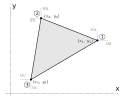
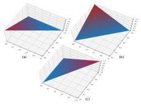
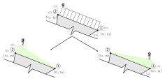

Elemento triangular
O elemento triangular que usaremos é o de 3 nós com deformações constantes e dois graus de liberdade por nó, com as funções de forma definidas diretamente no sistema x-y, sem a necessidade de escrever um elemento padrão. Vamos ver mais adiante que esse elemento possui integração exata com matriz de rigidez função das coordenadas nodais do elemento na estrutura em x-y e, portanto, diferentemente do quadrilateral não precisa de transformações de sistemas de coordenadas ou de integração numérica.

Funções de interpolação
As funções de interpolação para esse elemento serão lineares, já que como temos apenas 3 nós e cada nó tem dois graus de liberdade, um por direção de deslocamento, no máximo conseguimos escrever um polinômio linear.
Com o auxílio do triângulo de Pascal para polinômios podemos escrever a interpolação para os campos de deslocamentos em x, u(x, y) e em y, v(x, y) do elemento triangular de 3 nós:
Da mesma forma que o elemento quadrilateral, as mesmas funções de interpolação serão utilizadas para interpolar ambos os deslocamentos, portanto, somente precisamos determinar 3 coeficientes. No entanto, ao invés de escrevermos a matriz de coeficientes com as coordenadas fixas de um elemento com dimensões conhecidas, nós vamos escrever em função das coordenadas x-y dos nós do elemento, pois nesse caso é possível fazer uma formulação direta. Vamos utilizar os deslocamentos na direção x, u(x, y) para determinar os coeficientes.
Resolvendo-se o sistema acima encontramos os coeficientes A, B e C do polinômio.
Observe que os denominadores dos coeficientes são iguais e valem o mesmo que duas vezes a área do triângulo $A_t$ que define o elemento, ou seja:
Portanto, rescrevendo os coeficientes chegamos a:
Substituindo os valores desses coeficientes nas equações $\ref{eq:campoDeslocamentosU}$ e $\ref{eq:campoDeslocamentosV}$ e isolando o deslocamento de cada grau de liberdade:
Que, na forma matricial explicita e compacta são:
Resultando nas funções de forma:

Deformações
As deformações nesse elemento também dependem do estado plano analisado. No entanto, conforme já vimos, podemos utilizar as relações constitutivas simplificadas, sendo assim, somente na hora de integrar a matriz de rigidez do elemento é que devemos escolher pelo tensor constitutivo correto para representar o estado plano que se quer analisar.
No elemento triangular de deformações constantes as funções de interpolação já estão escritas no sistema x-y, então basta substituirmos os valores dos deslocamentos u(x, y) e v(x, y) pela equação $\ref{eq:desInterpolados}$ na equação das deformações que derivamos na fundamentação, que leva em conta as premissas de discretização do campo de deslocamentos em deslocamentos nodais do método dos elementos finitos, e fazer a derivada das funções de interpolação.
Fazendo as derivadas das funções chegamos a matriz $\textbf{B}$:
Determinação da matriz de rigidez do elemento
Conforme derivado na fundamentação, a matriz de rigidez do elemento triangular também é obtida pela equação:
Sendo o $\textbf{D}$ o tensor constitutivo do estado plano de tensões ou deformações conforme aplicável e será resolvida de forma analítica, pois essa integral é relativamente simples.
Antes de mais nada, preste atenção na matriz $\textbf{B}$ e responda: ela é função de que variável? x? y? Nenhuma! Ela somente é função das coordenadas nodais do elemento na estrutura, ou seja, a multiplicação $\textbf{B}^T \textbf{D} \textbf{B}$ pode ser retirada da integral e a integração do elemento resulta em:
Não disse que a integral era simples? Basta agora escolher o tensor constitutivo aplicável, do estado plano de tensões ou deformações, e resolver a multiplicação acima para encontrar a matriz de rigidez do elemento já no sistema x-y.
O procedimento para a obtenção da matriz de rigidez do elemento triangular com deformações constantes do estado plano é:
- Determinar as coordenadas dos nós do elemento da estrutura;
- Determinar o valor do dobro da área do elemento triangular com a equação $\ref{eq:2xAt}$;
- Montar a matriz $\textbf{B}$ com as coordenadas dos nós e a área do elemento usando a equação $\ref{eq:Bx}$;
- Calcular a matriz de rigidez do elemento com a equação $\ref{eq:ke}$.
Determinação do vetor de forças nodais equivalentes
Da fundamentação, sabemos que o vetor de forças nodais equivalentes é calculado pela equação:
Observe que estamos considerando a integral em z constante de novo e que $\textbf{f}$ já são cargas aplicadas diretamente nos nós.
A integração do vetor de cargas nodais equivalentes segue o mesmo princípio, no entanto como as funções de interpolação $\textbf{N}$ são função de x e y, não podemos retirá-las da integram. Vamos fazer em separado as cargas de corpo e as distribuídas para tratar especificamente cada integração.
Carga de corpo
A carga nodal equivalente de corpo é calculada com a seguinte integral:
O problema é resolver essa integral sobre um triângulo. Aqui caímos no mesmo problema comentado na fundamentação: como resolver uma integral sobre um elemento distorcido qualquer? Vamos usar a integração numérica! Não, vamos pensar um pouquinho. Nós estamos definindo uma carga nodal equivalente para o peso próprio do elemento função de pesos específicos nas direções x e y. Ainda, nosso elemento somente tem graus de liberdade de translação nas direções x e y. Então, ao invés de fazer um procedimento de integração complicado e trabalhoso, vamos simplesmente calcular o peso total do elemento, $P_e$, por direção, função dos pesos específicos por direção, e dividir igualmente pelos 3 nós, ou seja:
Como:
Então, para cada grau de liberdade:
Carga distribuída
A carga distribuída é calculada com a seguinte integral:
Sendo $\textbf{N}_l$ as funções de interpolação avaliadas sobre a aresta na qual estão aplicadas. Novamente temos uma integral complicada e também uma complicada avaliação das funções de forma sobre uma reta, que seria a aresta do elemento triangular. De novo, vamos pensar um pouquinho. Sabemos que nosso elemento possui arestas retilíneas e deformação constante, ou seja, mesmo após deformado a aresta continuará retilínea. Além disso, estamos utilizando funções de interpolação lineares, então, quando avaliadas em uma aresta, farão uma interpolação linear entre os valores que estão sobre a aresta, para os nós. E por fim, estamos considerando o carregamento constante e aplicado por direção no sistema da estrutura, x-y. Sobre essas considerações podemos concluir que sempre metade do carregamento será a carga nodal equivalente do grau de liberdade relacionado com a direção do carregamento distribuído aplicado.


Portanto, basta calcularmos o comprimento da aresta na qual está aplicada o carregamento, determinar a resultante do carregamento e dividí-la nos nós de acordo com a direção. O comprimento pode ser determinado em função dos nós inicial ($x_i$, $y_i$) e final ($x_i$, $y_i$) da aresta do elemento da estrutura,
E portanto, para o caso ilustrado na figura da carga na aresta entre os nós 1 e 2, a resultante do carregamento vale:
Lembrando de multiplicar pela espessura também pois admite-se que a carga está distribuída no comprimento e na largura da aresta do elemento. E o vetor de forças nodais equivalente é encontrado com a distribuição da metade da resultante do carregamento em cada nó.
Lembrando que o vetor acima é para uma carga distribuída constante em x-y na aresta entre os nós 1 e 2. Para outras arestas basta distribuir metade da carga por direção para os graus de liberdade correspondentes.
Com nossos dois elementos definidos, o quadrilateral e o triangular, vamos a aplicação.